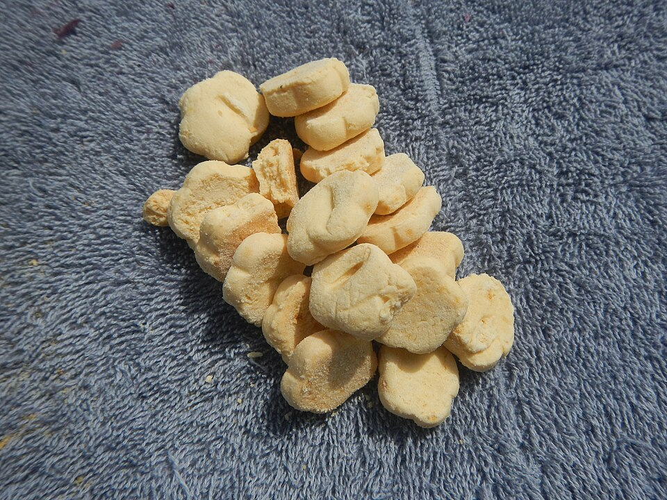

Doces · Biscoitos
Biscoito de araruta da Vó Marli

Ingredientes
- 4 ovos inteiros (200 g)
- 200 g de manteiga levemente derretida
- 1 colher (sopa) de açúcar de baunilha (10 g)
- 1 ½ xícara (300 g) de açúcar refinado
- 1 pitada de sal (1 g)
- 500 g de araruta pura
- 1 colher (sopa) de fermento químico em pó (10 g)
- Cerca de ½ xícara (60 g) de farinha de trigo, aos poucos, até dar o ponto
Modo de preparo
- Em uma bacia, misture levemente os 4 ovos com um garfo. Acrescente a manteiga derretida e misture bem.
- Adicione o açúcar refinado, o açúcar de baunilha e a pitada de sal. Misture até ficar homogêneo. Incorpore a araruta aos poucos até formar uma massa pesada.
- Coloque o fermento e continue mexendo. Acrescente a farinha de trigo aos poucos, só o necessário para uma massa firme que não grude nas mãos.
- Modele bolinhas pequenas, achate levemente e marque com o garfo. Disponha em forma untada e enfarinhada.
- Asse em forno preaquecido a 180 °C até dourar levemente por baixo. Deixe esfriar e sirva.
Dicas: use araruta verdadeira (não polvilho nem amido de milho). Derreta a manteiga sem ferver. Não acrescente leite nem água — isso compromete a textura. Faça os biscoitos pequenos e uniformes para assarem por igual.